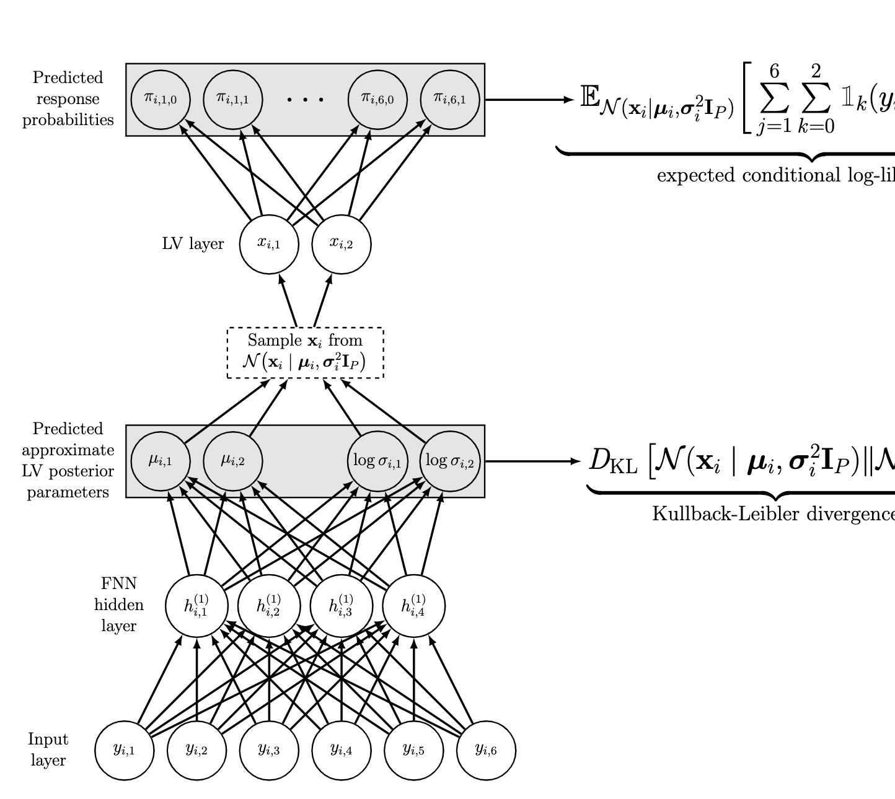

E-mail:
Bio
Hi, I'm Chris! I'm a sixth year Ph.D. candidate in Quantitative Psychology at the University of North Carolina at Chapel Hill advised by Daniel Bauer.
My reserach is broadly focused on building probabilistic models to understand and predict complex behavioral processes. Toward this end, I develop and disseminate probabilistic machine learning methods that can be used to extract insights from behavioral data including:
- smartphone and wearable sensor data,
- electronic health records,
- large-scale surveys,
- standardized tests,
- social media usage data,
I'm currently the statistical consultant for UNC's Department of Psychology and Neuroscience. I was previously supported for three years by a National Science Foundation Graduate Research Fellowship. Before that, I built machine learning models to detect at-risk undergraduate students for the Finish Line Project, an inter-departmental initiative to improve retention of first-generation college students at UNC.
Selected Research
|  |
A Deep Learning Algorithm for High-Dimensional Exploratory Item Factor Analysis
We investigated a computationally efficient deep learning algorithm to fit item response theory (IRT) models (i.e., latent variable models for categorical data) when the number of respondents, items, and latent variables are all large. The algorithm performed comparably to and was faster than state-of-the-art IRT estimation methods. Christopher Urban, Daniel BauerPsychometrika, 2021. paper | code |